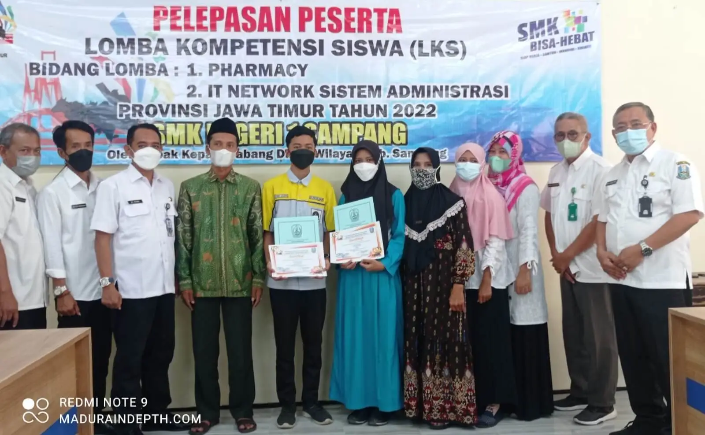

Membanggakan, dua pelajar Sekolah Menengah Kejuruan Negeri (SMKN) 1 Sampang mengikuti ajang Lomba Kompetensi Siswa (LKS) di tingkat Provinsi Jawa Timur.Dua siswa itu lolos setalah melalui seleksi LKS di wilayah kerja (Wilker) I Provinsi Jawa Timur yang mewakili wilayah Surabaya, Sidoarjo, Lamongan, Tuban, Bojonegoro dan Madura. Kedua siswa itu lolos ke lima besar dan akan dipertandingkan ke tingkat Provinsi bersama 11 kota atau kabupaten lainnya.
Kepala Sekolah SMKN 1 Sampang, Budi Sulistyo mengatakan dua siswa didiknya menjadi salah satu peserta terbaik di lima besar tingkat provinsi wilayah kerja I dan mewakili pelajar se-Kabupaten Sampang hingga Madura.“Kedua siswa ini yang terbaik dari lima kabupaten atau kota di Wilker I Jawa Timur dan akan merebutkan juara satu tingkat provinsi,”Budi menyampaikan, pencapaian itu tidak lepas dari dukungan keluarga dan pihak sekolah yang selalu mengasah, serta memberikan keyakinan kepada kedua siswa tersebut untuk selalu meningkatkan belajarnya